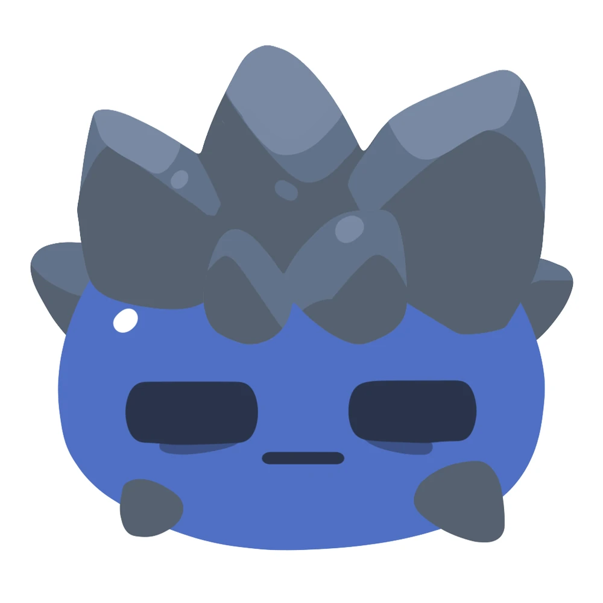
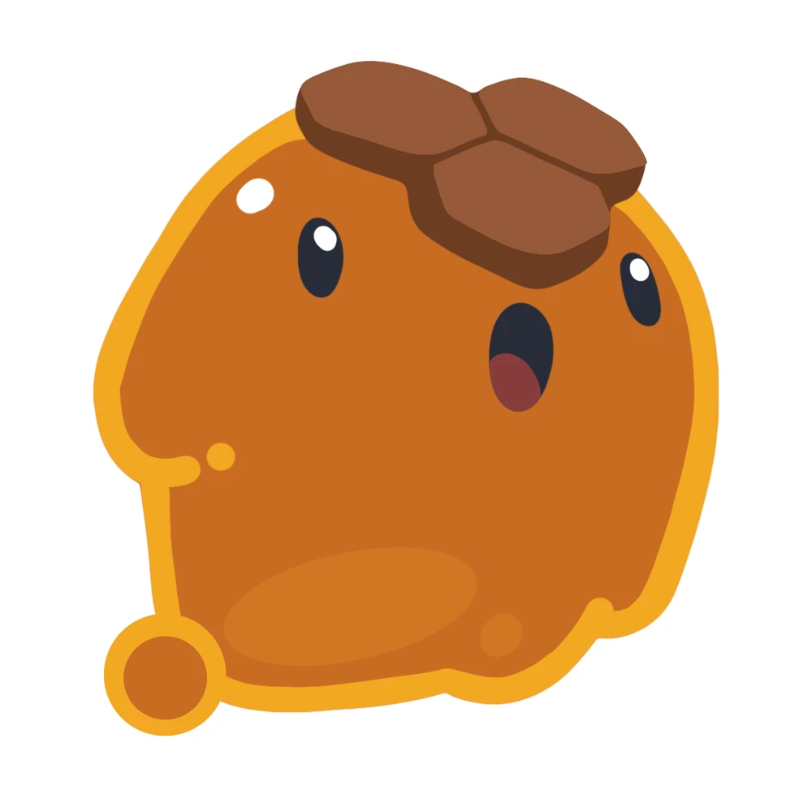
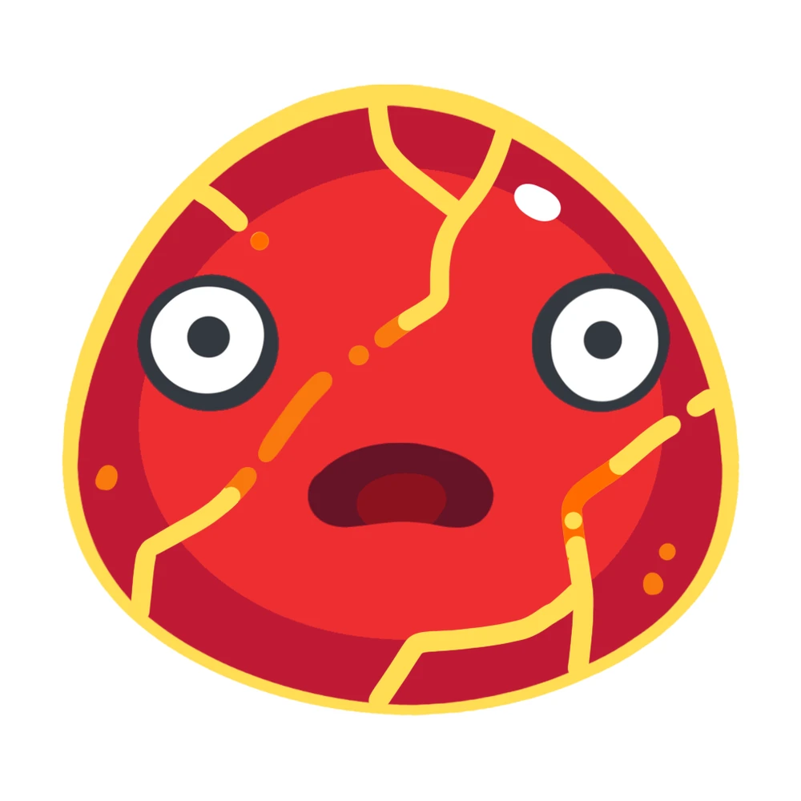
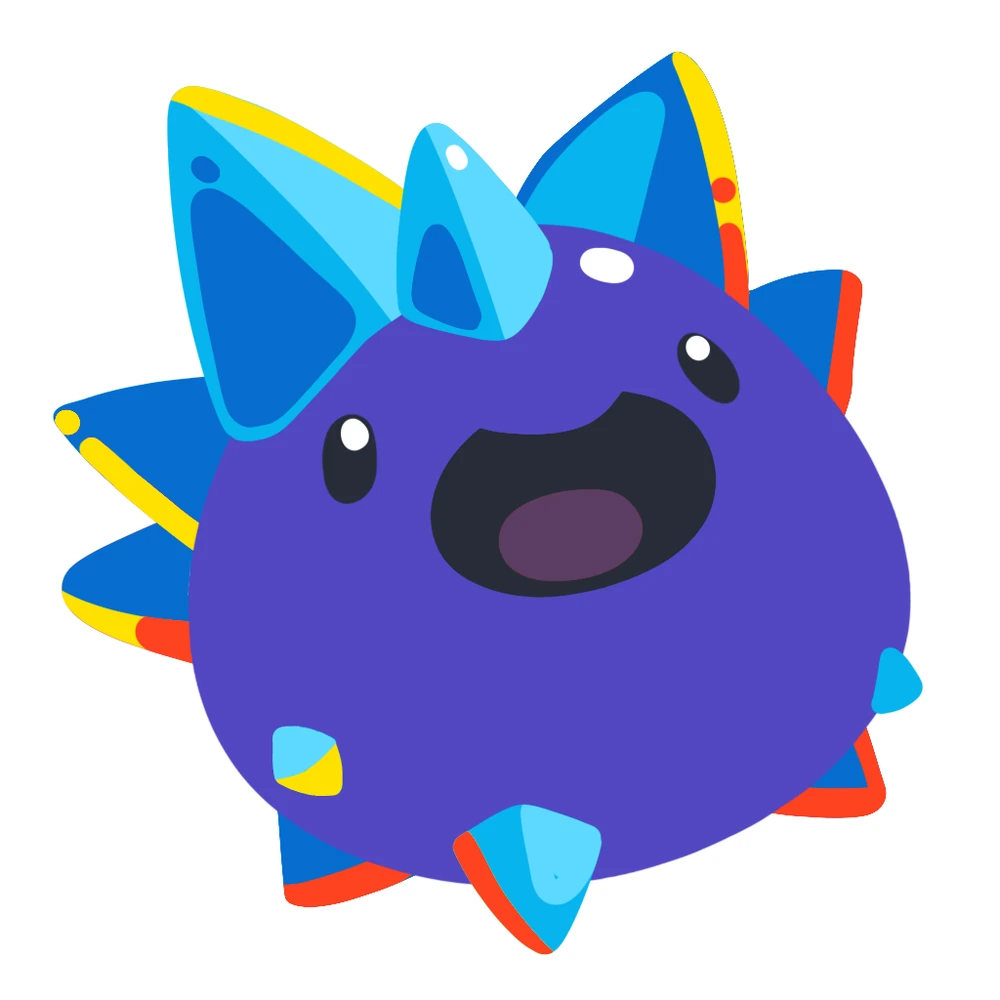
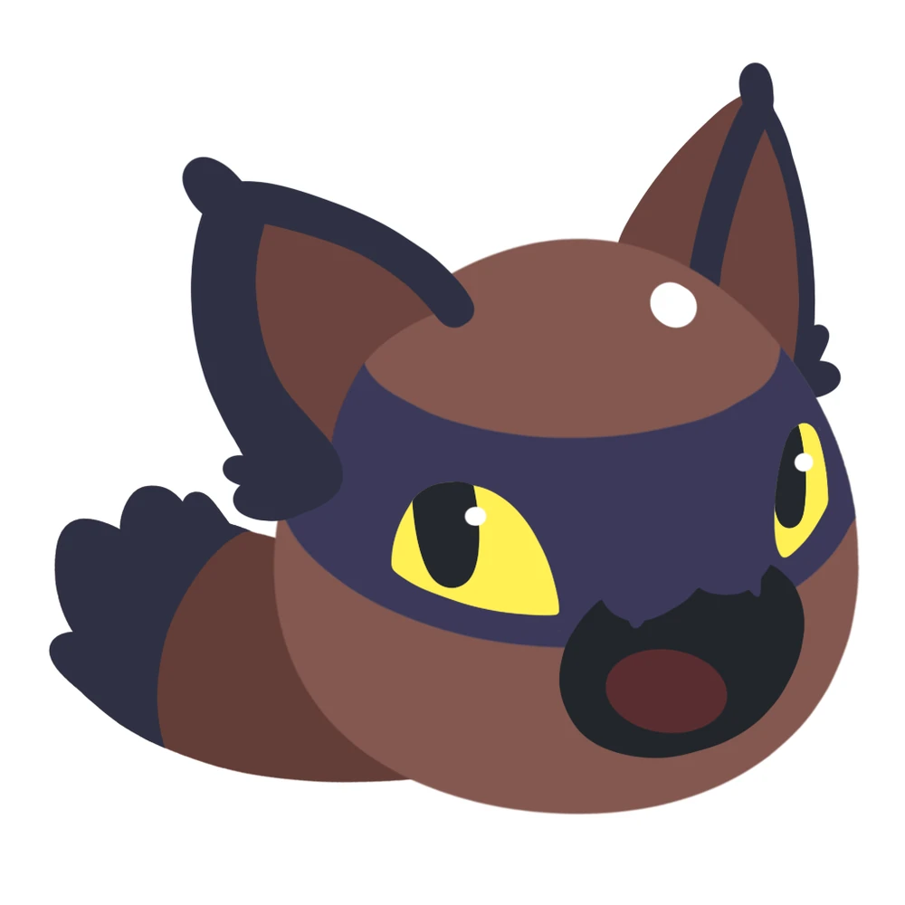
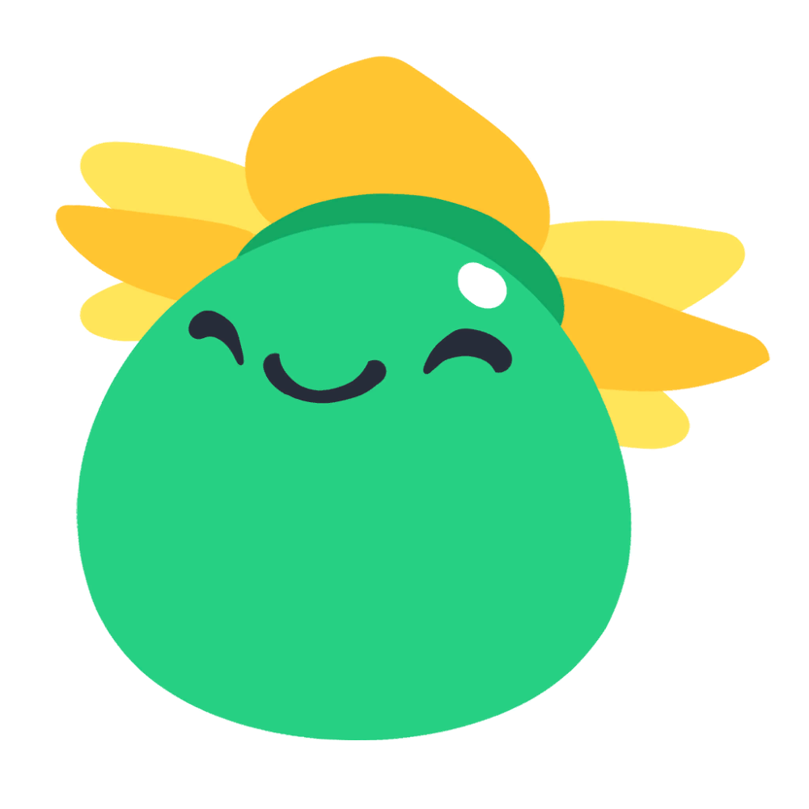
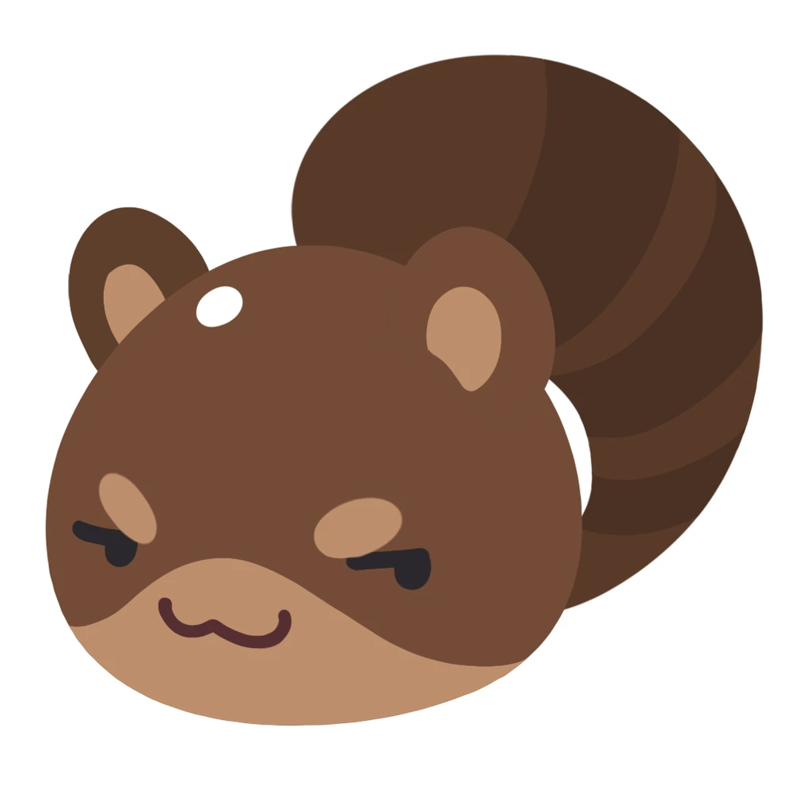
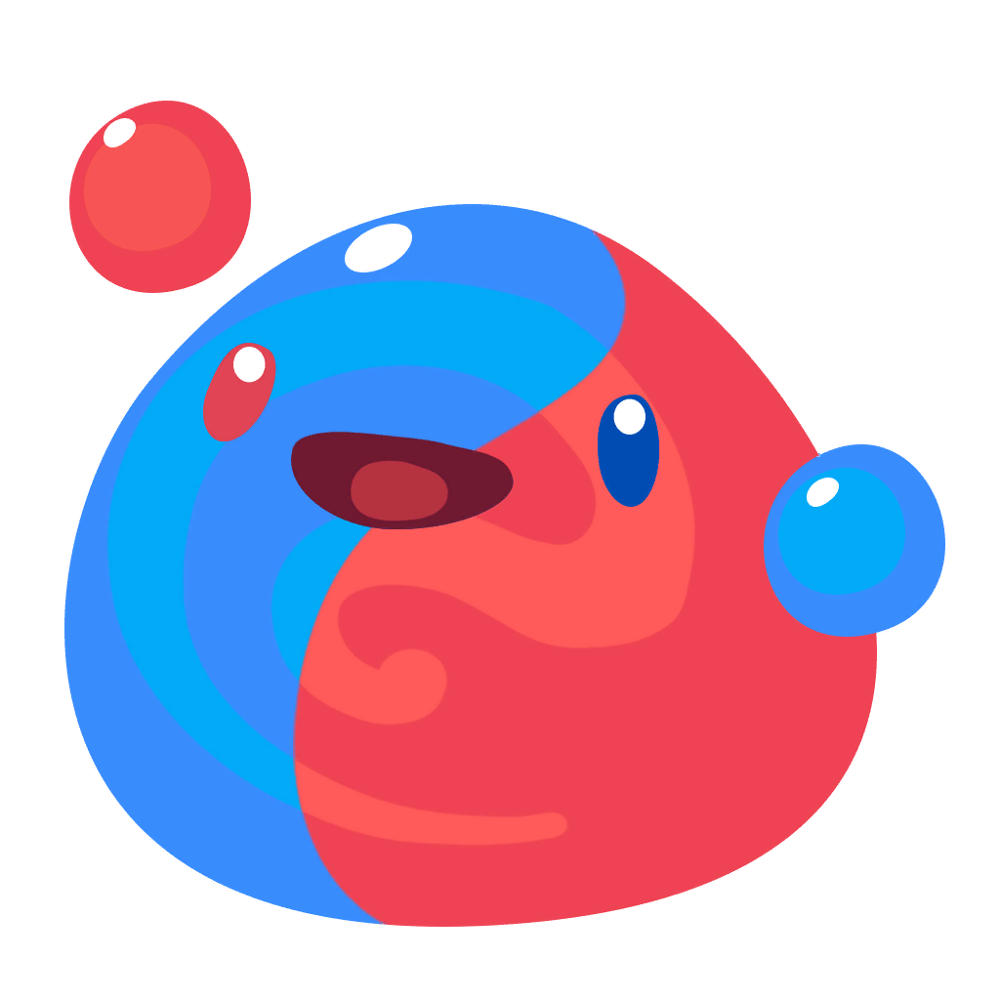
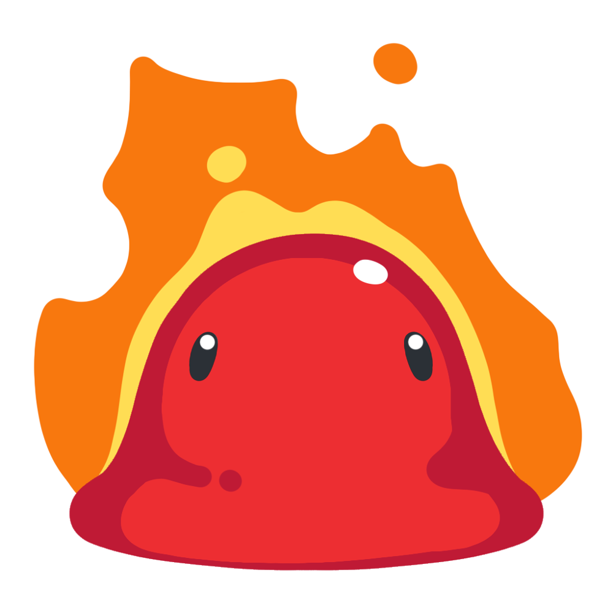
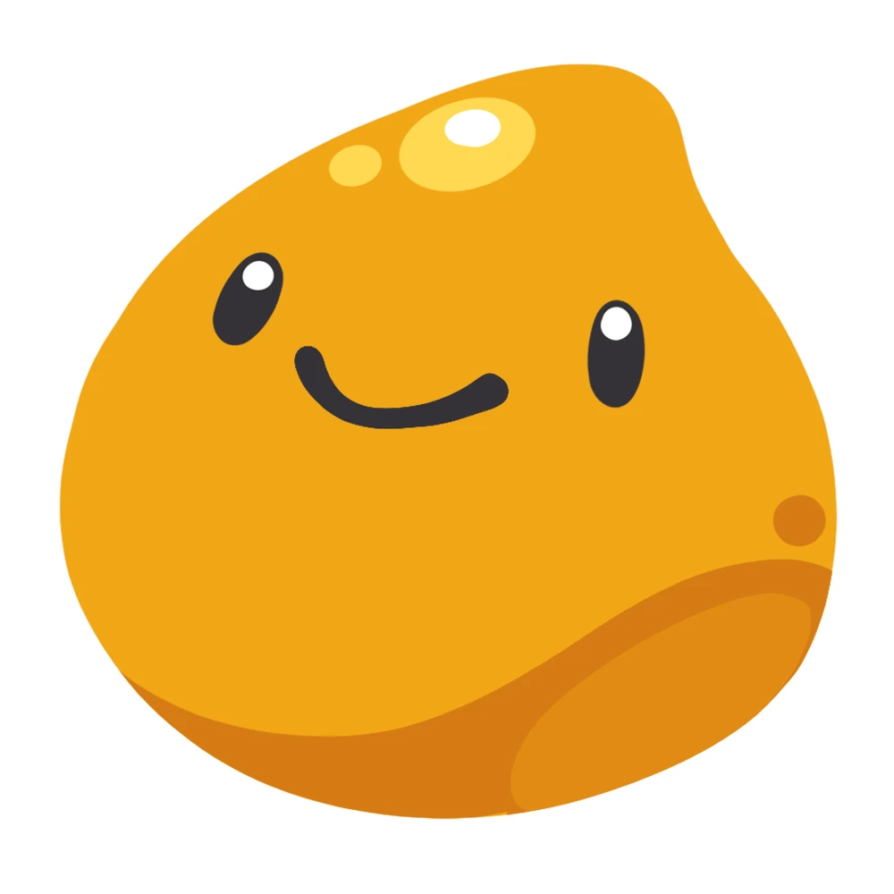

Visão Geral dos Slimes
Um guia completo de todos os slimes encontrados na Ilha Arco-Íris. Aprenda suas dietas, comidas favoritas e localizações para maximizar sua produção de plorts!
Slimes Comuns
Slime Rosa
Dieta: Tudo
Favorito: Nenhum
Local: Todos os biomas

Slime Rochoso
Dieta: Vegetais
Favorito: Beterraba Coração
Local: Vale Escaldante, área roxa da Costa Estrelada
Slime Tigrado
Dieta: Carne
Favorito: Galinha Pedregosa
Local: Áreas azuis dos Campos de Arco-Íris, áreas laranja/marrom do Vale Escaldante
Slime Fosforescente
Dieta: Frutas
Favorito: Cuborango
Local: Todos os biomas (aparece apenas à noite)

Slime de Mel
Dieta: Frutas
Favorito: Manga Menta
Local: Área rosa da Costa Estrelada, próximo ao rio e ao sul

Slime Cabum
Dieta: Carne
Favorito: Galinha da Roseira
Local: Áreas marrons e cavernas do Vale Escaldante

Slime Cristalino
Dieta: Vegetais
Favorito: Cebola Bizarra
Local: Áreas marrons e cavernas do Vale Escaldante

Slime Caçador
Dieta: Carne
Favorito: Galoso
Local: Áreas roxa e rosa da Costa Estrelada (fica invisível!)
Slime Torvelinho
Dieta: Frutas
Favorito: Pera de Espinho
Local: Aparece durante ciclones (vento nível 3) em qualquer bioma

Slime Emaranhado
Dieta: Carne
Favorito: Galinha Pintada
Local: Aparece durante nuvens de pólen nível 3 e eventos de vinha
Slime de Algodão
Dieta: Vegetais
Favorito: Alface d'Água
Local: Todos os Campos de Arco-Íris, áreas roxa e rosa da Costa Estrelada
Slime Panapanã
Dieta: Néctar
Favorito: Néctar Lunar
Local: Extremo sul da Costa Estrelada
Slime Pescador
Dieta: Carne
Favorito: Galinha Marinha
Local: Áreas com água no Vale Escaldante e Costa Estrelada
Slime Morcegueta
Dieta: Frutas
Favorito: Romã Rocha
Local: Cavernas e áreas marrons do Vale Escaldante

Slime Guaxinim
Dieta: Tudo
Favorito: Nenhum
Local: Vale Escaldante e Costa Estrelada (vira estátua durante o dia, aparece à noite)
Slime Hiper
Dieta: Vegetais
Favorito: Batata Turbo
Local: Labirinto Cinzento (área do Terrário)

Slime Gêmeo
Dieta: Frutas
Favorito: Polocereja
Local: Labirinto Cinzento
Slime Soneca
Dieta: Carne
Favorito: Galinha Confeito
Local: Labirinto Cinzento
Slime Molhado
Dieta: Água
Favorito: Nenhum
Local: Poças de água doce (próximo ao Gordo Cristalino no Vale Escaldante ou caverna atrás da cachoeira)

Slime Ígneo
Dieta: Cinzas
Favorito: Nenhum
Local: Poças de lava no Vale Escaldante (áreas marrons e cavernas)
Raros e Especiais

Slime Dourado
Dieta: Legume
Favorito: Gengibre Dourado
Local: Aparece aleatoriamente em qualquer lugar (raro)
Slime da Sorte
Dieta: Carne
Favorito: Nenhum
Local: Aparece aleatoriamente em qualquer lugar (som de de moedas)
Slime Gema
Dieta: Não come
Favorito: Nenhum
Local: Ninhos de galinhas (aparece aleatoriamente)
Slime Sombrio
Dieta: Nada
Favorito: Nada
Local: Labirinto Cinzento (areas estaveis )
Slimes Gordos
Dieta: Depende do tipo
Favorito: Depende do tipo
Local: Escondidos em todas as áreas (bloqueiam passagens)
Dicas Importantes
- Slimes Largos: Combine dois tipos de slimes para criar um Largo que produz plorts dos dois tipos.
- Cuidado com o Tarr: Se um Largo comer um terceiro tipo de plort, ele se transforma em um Tarr hostil!
- Comidas Favoritas: Alimentar um slime com sua comida favorita dobra a produção de plorts.
- Slimes por Clima: torvalinos aparecem em ciclones (vento nível 3) e Emaranhados em tempestades de pólen nível 3.
- Slimes Noturnos: Flosflorecente só aparece à noite. Guaxinim vira estátua durante o dia.
- Slimes Especiais: O Molhado precisa de água, O Ígneo precisa de cinzas/lava. Não podem ficar em currais normais.